This manual follows one rule above all others: it never invents hardware, GPIO pins, network architecture, or software behaviour that does not already exist in the CIPHER repository. Every page is labelled with one of the status markers below, taken directly from a repository audit performed before this manual was written (see the Repository Audit Summary page).
| Field | Value |
|---|---|
| Manual version | 1.1 (consistency-audited 1 October 2026) |
| Generated | 28 September 2026 |
| Source repository state | cipher-pqc, branch master, software v0.1.0-dev |
| Test baselines | 1192 passing on the Windows development machine (current). 649/649 passing on the Pi at the earlier pre-reviewer-evaluation baseline; the 1192 baseline has not yet been pulled and re-verified on the Pi. |
| Primary sources consulted | README.md, docs/SDD.md, docs/DEMO_GUIDE.md, and every listed source module (capture/, enforcement/, config/, ml/, dashboard/, reports/) |
| Key assumption | No GPIO pins, OLED wiring, LED wiring, systemd unit, or Linux firewall policy is approved anywhere in the repository as of this writing — all are marked PENDING rather than guessed. |
| Fixed constraint carried throughout | Exactly one external USB Wi-Fi adapter. Built-in Wi-Fi is always the management interface. |
Performed directly against the repository before any manual content was written. This table is the factual basis for every status pill used later in this document — nothing below is inferred or assumed.
| Item | Implemented? | Exact source | Safe to document as final? |
|---|---|---|---|
| Raspberry Pi OS-level bring-up | Yes (completed) | ARM64 Debian 13 on Pi 4 Model B 4GB; repository cloned, .venv built, pinned dependencies installed, imports succeeded, preflight.py passed, 649/649 tests passed at the then-current baseline | Yes — as bring-up only |
| OLED driver code | No | Not found anywhere (grep -r ssd1306/oled — zero matches) | No |
| GPIO LED driver code | No | Not found anywhere; no hardware/ package exists | No |
| GPIO pin assignments | No | No constant, config, or doc defines a pin number for any peripheral | No — marked PENDING |
| Windows host-level live capture | Yes (tested, Windows-only) | capture/host_live_source.py — a separate, temporary run_live_demo.py path; normalizes traffic around the local host; covered by tests/capture/test_host_live_source.py | Yes — document as its own, distinct capability |
| Raspberry Pi / multi-device live capture | No (scaffold only) | capture/live_source.py — raises LiveCaptureNotImplementedError immediately; this is the general, Pi-oriented scaffold, unaffected by the Windows path above | No |
| Monitor-mode hardware capability | Yes (verified outside CIPHER) | AR9271 on ath9k_htc (firmware 1.3) switched to monitor mode; 802.11 + Radiotap frames captured with tcpdump; 100-packet PCAP written | Yes — as a hardware capability only |
| Monitor-mode handling inside CIPHER | No | Not referenced anywhere in capture/; no Radiotap/802.11 parsing exists | No — ingestion not validated |
| Linux enforcement backend | No | enforcement/backends.py — only NoOpIsolationBackend exists; module docstring explicitly defers iptables | No — do not apply firewall rules |
| systemd service unit | No | No .service file anywhere in the repository | No |
| Dashboard network binding | Configurable, defaults to localhost | config/constants.py — DEFAULT_FLASK_HOST = "127.0.0.1", overridable via FLASK_HOST env var | Yes — document the existing override |
| ML model loading | Yes | ml/loading.py, ml/train.py — optional, QRS-only mode if absent | Yes |
| Report generation | Yes | reports/pdf_generator.py — ML-DSA-44 signed, 3-page PDF | Yes |
| Core risk pipeline (QRS + fusion + enforcement decision) | Yes | risk/, fusion/, enforcement/decision.py — 1192 tests passing on Windows | Yes |
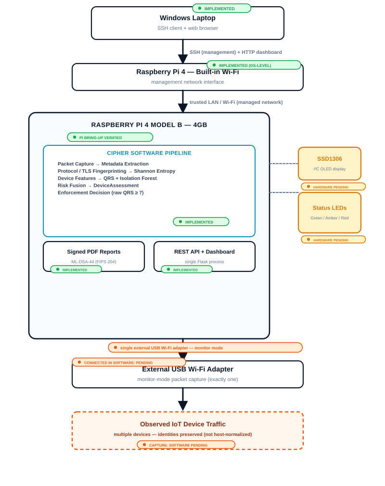
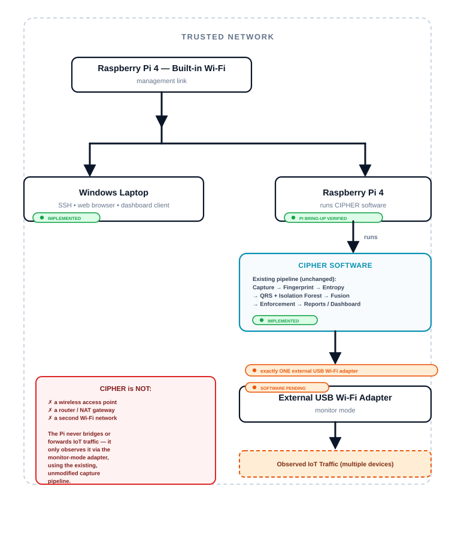
ath9k_htc fw 1.3; monitor mode verified — exactly one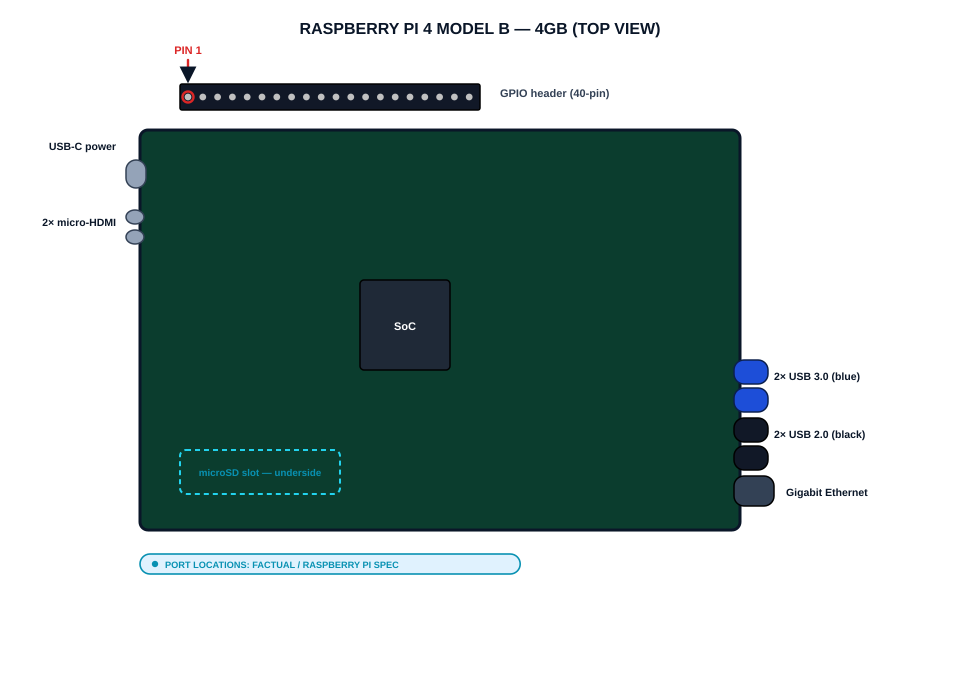
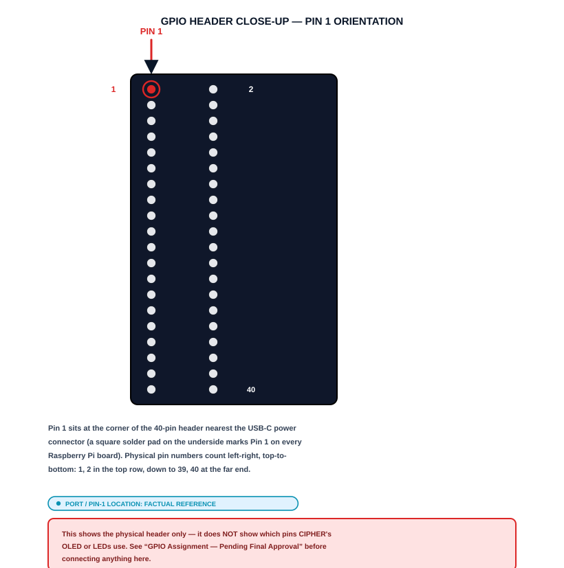
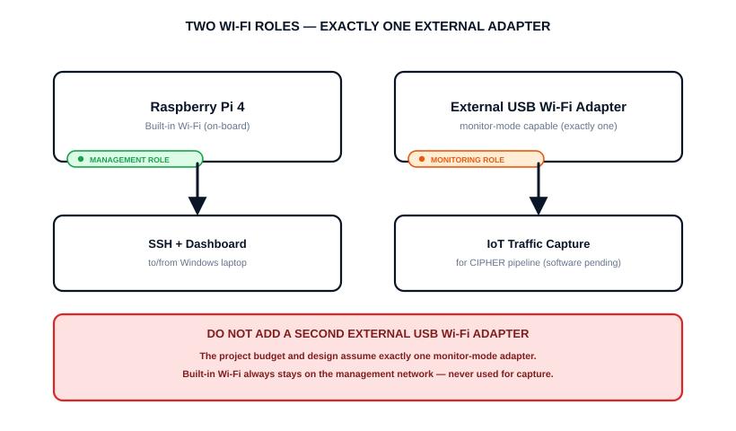
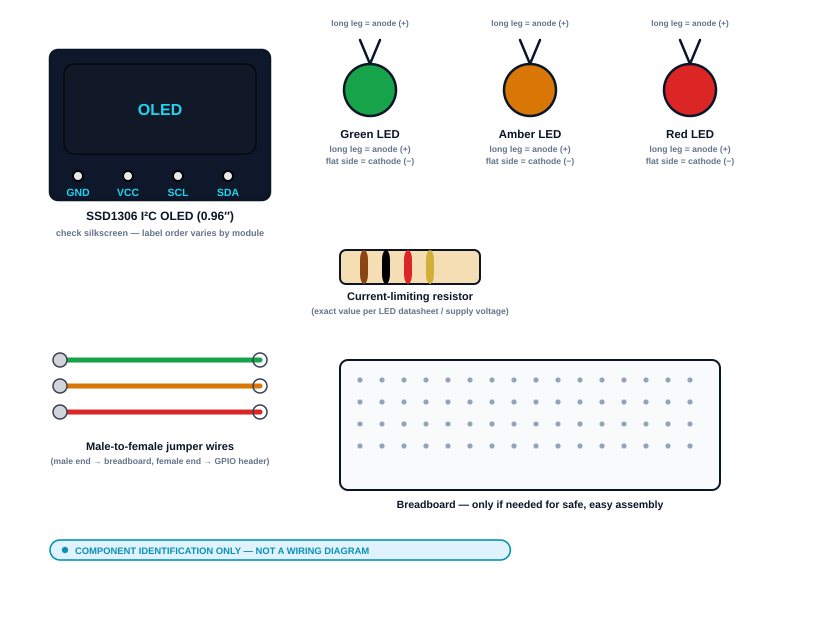
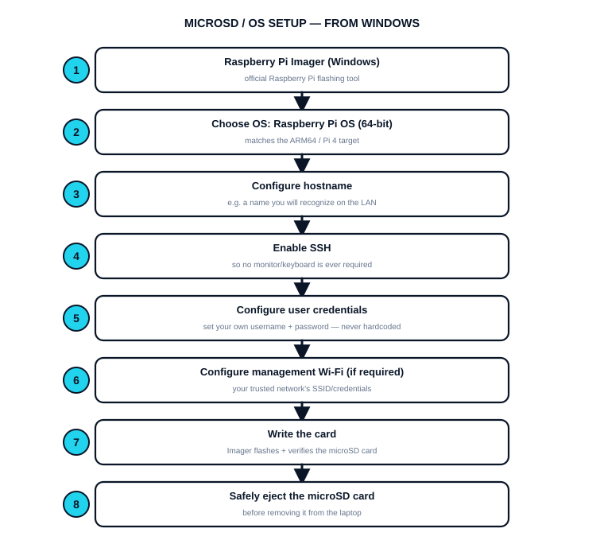
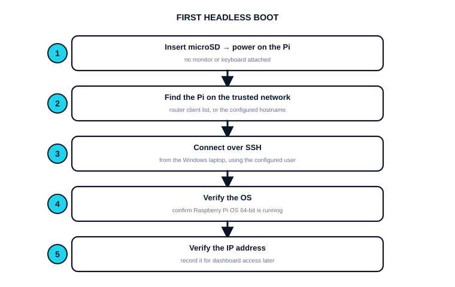
No monitor or keyboard is required. Find the Pi's address from your router's client list, or by its configured hostname, then connect from the Windows laptop:
Before connecting the monitoring adapter, confirm the built-in Wi-Fi is up and identify its actual
interface name — do not assume it will be wlan0.
wlan0 on every board/OS image).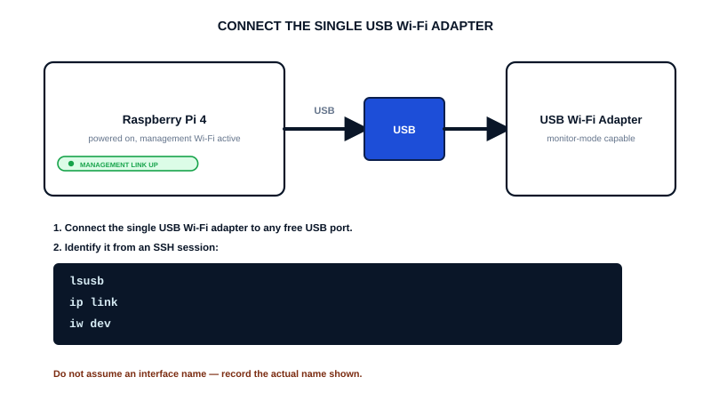
lsusb, ip link, and iw dev; record its actual interface name.Before CIPHER uses the adapter, confirm the adapter, its driver, and monitor mode itself are all actually present — do not assume support for an unverified chipset.
lsusb) — Qualcomm Atheros AR9271ath9k_htc, firmware 1.3iw listtcpdump captured IEEE 802.11 + Radiotap frames,
writing a 100-packet PCAP file. This establishes that this adapter and driver can produce a valid monitor-mode
capture on this Pi. It does not establish that CIPHER ingests such a capture — monitor-mode handling inside
CIPHER remains SOFTWARE IMPLEMENTATION PENDING.
capture/live_source.py is
a documented scaffold that raises immediately, and no Radiotap/802.11 parsing exists anywhere in
capture/. This page verifies the adapter is ready; wiring it into CIPHER's pipeline is separate,
future work (see page 26).
tcpdump capture is not CIPHER validation.
capture/offline_source.py yields a packet only when it has an IP layer, a TCP or UDP layer, and a
non-empty transport payload; anything else is silently skipped. Measured against the real, unmodified reader: a PCAP
of encrypted (CCMP) 802.11 data frames yielded 0 of 5 packets, 802.11 beacons 0 of 5, a mixed capture
0 of 4, while unencrypted 802.11 data frames carrying IP/TCP via LLC/SNAP yielded 3 of 3. So a
monitor-mode PCAP is processable today only for its unencrypted-IP subset; a capture from a normal protected Wi-Fi
network yields nothing, with no error.
venv/ or .venv-pi-validation/ from the Windows development machine.
Both are Windows/x86-specific and gitignored — they will not work on ARM64 Linux.
requirements.txt.venv is activated in the current shell.requirements.txt is CIPHER's canonical, independently re-validated dependency baseline — but it was
validated on Windows/x86 only. Raspberry Pi bring-up must build its own fresh environment from this same file, not
by assuming Windows results transfer.
Windows validation does not prove Raspberry Pi compatibility. The pinned dependencies below must be
verified installing cleanly on the actual Pi, from requirements.txt exactly as committed.
| Package | Pinned version | ARM64 install result |
|---|---|---|
| flask | 3.1.3 | |
| scapy | 2.7.0 | |
| scikit-learn | 1.8.0 | |
| joblib | 1.5.3 | |
| dilithium-py | 1.4.0 | |
| cryptography | 50.0.0 | |
| reportlab | 5.0.0 | |
| python-dotenv | 1.2.2 | |
| pytest | 9.1.1 | |
| numpy | 2.4.6 |
requirements.txt is
CIPHER's canonical baseline for a reason (see docs/SDD.md's Pre-Pi hardening addendum).
Run the existing, unmodified software baseline on the Pi before connecting or implementing any hardware-specific behaviour. Do not copy Windows performance numbers and relabel them as Pi results.
python evaluate_performance.py, and
--stability-iterations for a sustained-run drift check), which runs unchanged on ARM64 and records
platform metadata so the two stay distinguishable. No Pi performance numbers have been collected yet — do
not quote any.
Isolation Forest anomaly detection is optional and secondary to QRS. If no trained model is present at
ml/artifacts/anomaly_detector.joblib, CIPHER runs correctly in QRS-only mode — this is not an error.
ml/dataset.py) — do not
substitute a different data source.data/datasets/CIPHER_Raw_Dataset_InputOnly_5000.xlsx (the synthetic
medical IoT workbook) as training data — the project's training process does not currently use it, and this
manual does not change that decision.python -m ml.train so it is created
under the Pi's installed Python/scikit-learn environment. If an existing artifact is reused instead, its
compatibility must be explicitly verified.CIPHER serves its React dashboard and REST API from a single Flask process
(run_demo.py). By default it binds to 127.0.0.1 — reachable only from the Pi itself.
config/settings.py) — no code change.FLASK_HOST=0.0.0.0 exposes the dashboard to the whole trusted LAN, not just your laptop. Do not expose
it more broadly (e.g. port-forwarded to the public internet) — that is outside this project's scope.
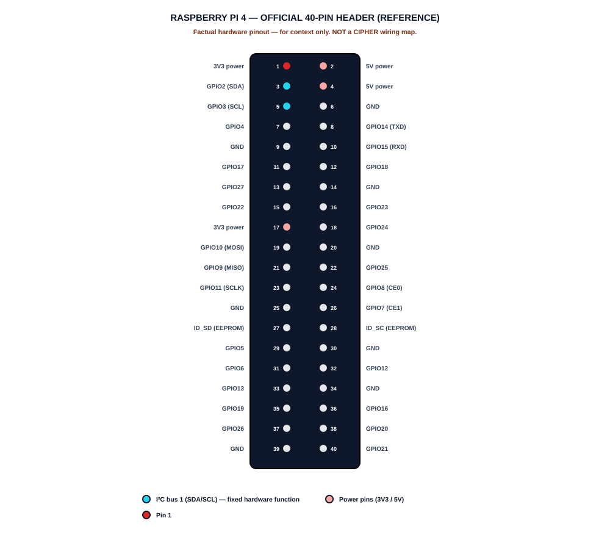
The approved bill of materials specifies an SSD1306 I²C OLED. Its four connections are
typically labelled VCC, GND, SDA, SCL — but always verify the
exact markings printed on your specific module before assuming label order.
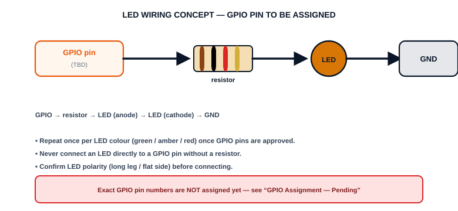
| CIPHER risk category | Desired LED colour | Status |
|---|---|---|
| LOW | Green | Software Pending |
| MEDIUM | Amber | Software Pending |
| HIGH | Red | Software Pending |
| Component | Signal | BCM | Physical pin | Destination |
|---|---|---|---|---|
| SSD1306 OLED | SDA | GPIO2 | 3 | |
| SSD1306 OLED | SCL | GPIO3 | 5 | |
| SSD1306 OLED | VCC | |||
| SSD1306 OLED | GND | |||
| Green LED (LOW) | anode via resistor | |||
| Amber LED (MEDIUM) | anode via resistor | |||
| Red LED (HIGH) | anode via resistor |
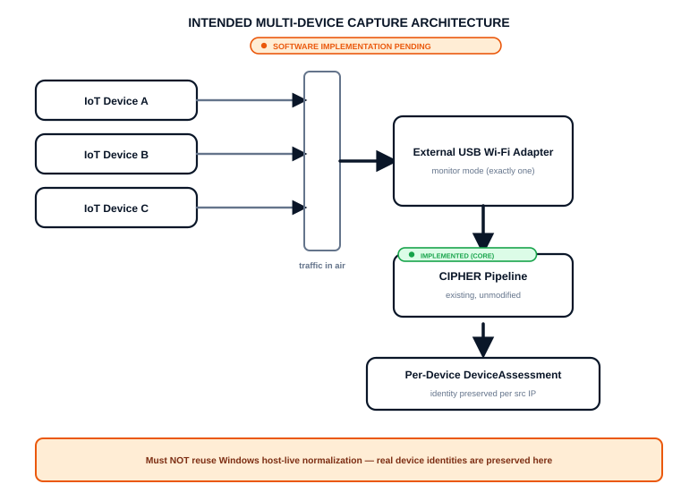
capture/host_live_source.py) treats the laptop itself as the
one monitored device and normalizes every packet around its own IP. That behaviour is specific to host-level
capture and must not be copied into the Pi's multi-device monitoring architecture, which must preserve each
observed device's real identity by source IP.
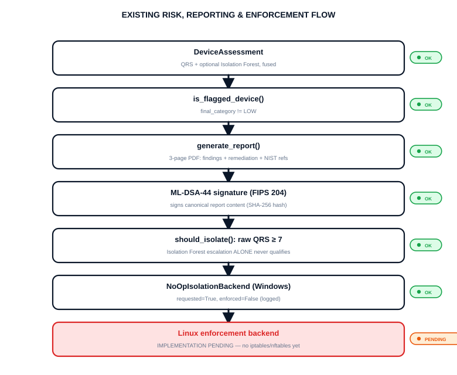
| QRS score | Category | Isolation eligible? |
|---|---|---|
| 0–2 | LOW | No |
| 3–6 | MEDIUM | No |
| 7–10 | HIGH | Yes (raw QRS ≥ 7) |
No OLED or LED driver code exists yet, so no repository-supported test command exists either. The checklist below records what will need verifying once that code exists — it does not name any command that exists today.
No .service unit file exists in the repository. The intended boot concept, at a
conceptual level only:
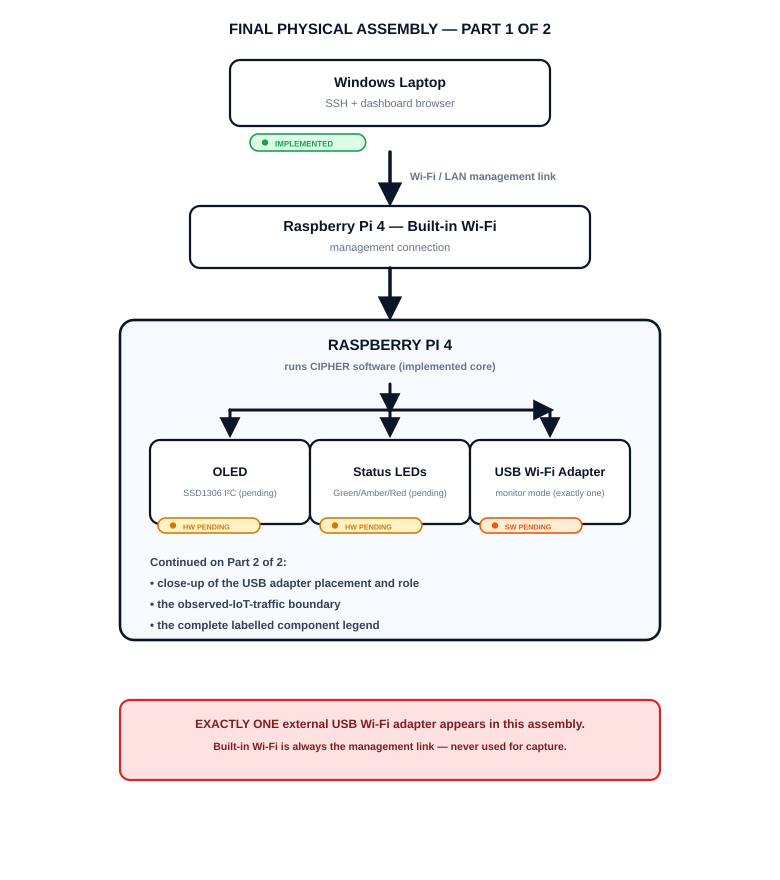
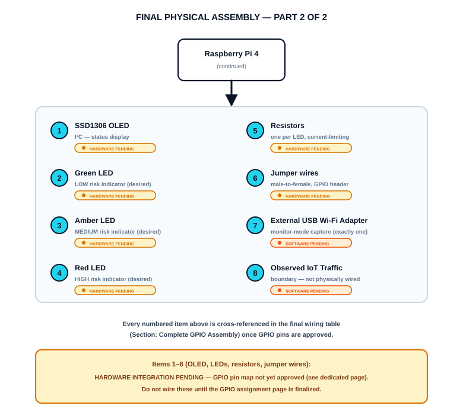
.venv activatespytest -q passespreflight.py passesevaluate_demo.py passesip link, iw dev outputlsusb output, cable/port seatingiw list supported interface modesdmesg for load errors after plugging inFLASK_HOST, Pi IP, same trusted networkFLASK_HOST=0.0.0.0 and restart (page 21).venv, exact requirements.txt pins.venv per page 17ml/artifacts/anomaly_detector.joblib presentdata/keys/, disk spaceNoOpIsolationBackend is in use; do not apply manual firewall rulesFollows existing CIPHER capabilities; the controlled demo remains the reliable fallback throughout.
preflight.py)run_demo.py fixture)| Capability | Current status | Verified on Pi? |
|---|---|---|
| Core CIPHER pipeline (capture → fingerprint → entropy → risk) | Implemented | Yes — at the 649-test baseline |
| Quantum Risk Score (QRS) | Implemented | Yes — at the 649-test baseline |
| Isolation Forest (optional) | Implemented | Yes — artifact trained on the Pi; preflight passed |
| Signed PDF report generation | Implemented | Covered by the Pi test run |
| ML-DSA-44 signing | Implemented | Covered by the Pi test run |
| REST API + dashboard | Implemented | Not yet confirmed from the laptop browser |
| Built-in management Wi-Fi | OS-level, implemented | Yes — SSH and management worked throughout |
| Current 1192-test baseline | Implemented (Windows) | No — not yet pulled or re-verified on the Pi |
| USB monitor adapter — hardware | Hardware capability verified | Yes — monitor mode + tcpdump PCAP |
| USB monitor adapter — CIPHER ingestion | Software pending | No — no Radiotap/802.11 capture source exists |
| Multi-device live capture | Software pending | No |
| Pi performance benchmark | Harness implemented | No — pending execution |
| OLED | Hardware integration pending | No — no driver code |
| Status LEDs | Hardware integration pending | No — no driver code |
| Linux enforcement (firewall isolation) | Software pending | No — NoOpIsolationBackend only |
| Physical isolation latency | Not measured | No |
| systemd service | Software pending | No |
| Sustained (72-hour) operation | Not yet validated | No |